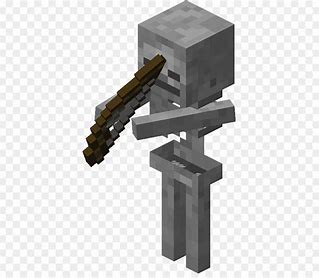

Minecraft Mobs
Creeper

The Creeper is an incredibly volatile enemy in Minecraft, probably the most dangerous one you’ll encounter
in the overworld. It’s a tall green monster with four legs and a strange frowning face.
When struck by lightning, a creeper becomes a charged creeper, which amplifies its explosion power and enables mob
heads to be obtained from piglins, zombies, skeletons and other creepers it kills.
Due to its distinctive appearance and unique and destructive method of attack, the creeper has become one
of the most iconic mobs of Minecraft, being featured in promotional material and merchandise.
Unlike most mobs, the creeper does not have an idle sound, nor does it have unique step sounds. Although it does make normal
stepping and swimming sounds, it is hard for players to distinguish those from sounds they make themselves.
This makes the approach of a creeper difficult for an unwary player to notice until it starts hissing.
Zombie
Zombies are common undead hostile mobs that deal melee damage and commonly attack in groups.
Zombies may spawn in the Overworld in groups of up to four above solid blocks at a light level of 0, except in mushroom
fields and deep dark biomes. All zombies spawned in desert biomes and exposed to the sky have a likelihood of 80%[JE only]/70%
[BE only] to be replaced
by husks. Zombies that are not husks or drowned have a 5% chance to spawn as zombie villagers.
If a player is near a village at midnight, up to 20 zombies may be spawned in the village in accordance with
mob spawning rules. The spawning can even happen in mushroom fields biome if the triggering player is in an adjacent biome.
Zombies spawned as a part of a siege are always
regular zombies; zombie villagers, husks and drowned never spawn as a part of a siege.
Zombies spawned from a monster spawner are never zombie villagers in Java Edition, although zombie
monster spawners in Bedrock Edition
are able to produce them. Zombies spawn from monster spawners inside 50% of monster rooms.
Skeleton

For the variant that spawns in icy biomes, see Stray. For the Nether variant, see Wither Skeleton.
For other uses, see Skeleton
Skeletons spawn commonly in soul sand valleys biomes. However, existing skeletons lower the spawning chances of other
hostile mobs nearby, meaning there are much less skeletons in a given area compared to zombified piglins in nether wastes.
In nether fortresses structures, there is a 20%
chance that a skeleton spawns in place of a wither skeleton.
Four skeleton horsemen spawn when a skeleton horse trap is triggered, typically during a thunderstorm.
The skeletons ride on skeleton horses and are equipped with enchanted bows
and iron helmets and, in Java Edition, have damage immunity for 3 seconds after spawning.
A skeleton may spawn above a solid block at a light level of 0 from all Overworld except in mushroom
fields and deep dark biomes, usually in small groups of up to four skeletons in Java Edition or two skeletons in Bedrock Edition.
80% of skeletons spawned directly under the sky in snowy plains, ice spikes,
frozen oceans, deep frozen oceans and legacy frozen oceans biomes spawn as stray mobs.
Enderman
The Enderman is a tall neutral mob found in all three dimensions. Endermen normally ignore players and lazily
amble about, but they will swiftly walk to attack those that damage it or look directly at its face. Endermen teleport
to avoid water (which harms them), projectiles and some other damage sources, and they occasionally pick up certain blocks.
They will also teleport more rapidly in sunlight.
Endermen can spawn on any solid surface that has at least three empty spaces above, at the light level of 0 in
the Overworld and the End, or a light level of 7 or less in
the Nether. They are the only mobs that spawn in all 3 dimensions.
Endermen spawn uncommonly in the Overworld, in all biomes except mushroom fields and deep dark.
They often spawn in groups of two, and rarely in groups of three.
An enderman can be provoked by a player or other mob attacking them. They can also be provoked by a player looking them
in the eyes for 5 game ticks (1⁄4 second)[1] from up to 64 blocks away. Endermen
open their mouths and begin to shake[Java Edition only] angrily if provoked; they also make loud and length
y sounds while being stared at. If the player continues to maintain eye contact, the enderman does not move,
although it may teleport away. Once the player stops looking at the enderman, it runs toward the back of the player
to attack, although it ceases if hit by another player or mob.[2] An aggravated enderman runs fast and often teleports to
the location of a player or mob up to 32 blocks away (orthogonally). Endermen are not provoked by a player viewing it
through a transparent block or while wearing a carved pumpkin.